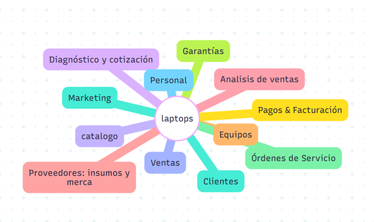

El SGTL es un sistema diseñado para optimizar la operación de un taller de reparación de laptops. Administra de forma centralizada las áreas clave del negocio: Clientes, Equipos, Diagnóstico y Cotización, Órdenes de Servicio, Catálogo, Inventario, Ventas, Pagos & Facturación, Garantías, Marketing, Personal y Proveedores.
En los talleres de reparación suelen existir fallas de organización y trazabilidad: diagnósticos y cotizaciones dispersos, seguimiento manual de órdenes, control limitado de inventario, pagos sin conciliación y poca visibilidad del desempeño (ventas, rotación de refacciones, tiempos de reparación y garantías). Esto genera respuestas lentas, costos ocultos y pérdida de confianza del cliente.
Sistematizar los procesos de recepción, diagnóstico, reparación y entrega mediante un sistema web que integre inventario, catálogo y finanzas, con el fin de optimizar el flujo de Órdenes de Servicio, mejorar la precisión de cotizaciones y cobros, además de generar métricas operativas para apoyar la toma de decisiones.
El sistema se fragmentó empleando la estrategia de divide y vencerás, identificando módulos independientes que se integran fácilmente en una solución completa.
 |
| Sebastian Hernandez Angeles |
| 230110313@itsoeh.edu.mx |